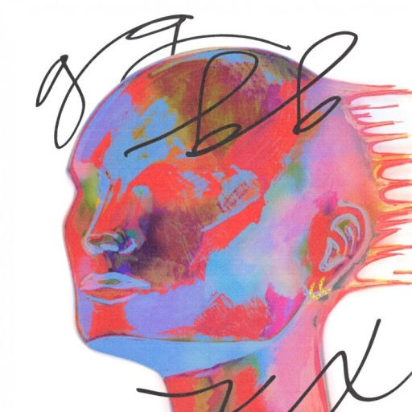

I haven't spoken to ya,
haven't seen you in months
Too busy living so we fell out of touch
I didn't think I had to let
you know we were done
We weren't together
so how could we break up
You got the chance to tell
everybody your side
It's my turn to tell 'em mine
You came to my place a couple of times
Got high and you slept over
Just a few days, just a few nights
You and I were never sober
If you wanted something more
then you shoulda asked
Would you please stop
acting like the ex I never had?
I'm checkin' my texts and readin' 'em back
We were cool, at least I thought so
Seein' all this and hearin' all that
We were good but I guess we're not though
It was never real enough for you to be mad
So why you out there
acting like the ex I never had?